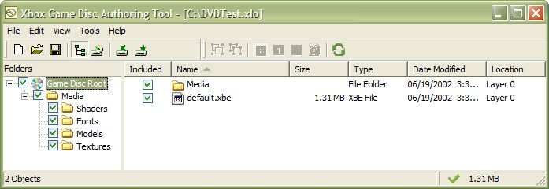

After starting a new session or opening an existing session, XbGameDisc displays its File View. The File View is divided into two panes, much like Windows Explorer. In the left pane is a tree view, representing the folders and subfolders that contain the source files for your game disc layout. Selecting a folder from the left pane displays that folder's contents in the right pane. The File View is pictured here:

Next to each folder or file is a check box. Select a check box to include that file, or the contents of that folder, in the layout for the game disc. When you begin a new authoring session, XbGameDisc automatically attempts to place all the files in the source folder you have chosen into the game disc layout. If there is not enough space left in the layout for all the files, some of them will remain unplaced. Files that are not placed are designated in the right pane by their Location, which is listed as Unplaced. Unplaced files also appear in the Unplaced Files Window. (See Unplaced Files for details.)
The right end of the status bar at the bottom of File View displays an icon that indicates whether the layout in XbGameDisc has been synchronized with the contents of the staging area. The synchronization icons are as follows:
If you change the contents of the staging area on your hard disk, you should rescan the staging area to update the files XbGameDisc is including in its layout. To rescan the staging area, click the Rescan Staging Area button on the tool bar, or click Rescan Staging Area on the Edit menu.
Note The XbGameDisc tool does not allow you to alter the contents of the staging area in any way; XbGameDisc merely reflects the contents of the staging area.
The XbGameDisc tool can also automatically scan the staging area for changes. Click the Options command on the Tools menu to display the Layout Options dialog box. Select the Enable Automatic Rescan check box and click OK. When automatic rescan is active, XbGameDisc automatically alters its layout whenever you add files to, remove files from, or change files in the staging area.
Note Depending on how your game disc is laid out, XbGameDisc may not be able to fit new or changed files into the layout. If a file does not fit, XbGameDisc displays a dialog box to alert you to this situation and places the file in the Unplaced Files Window.